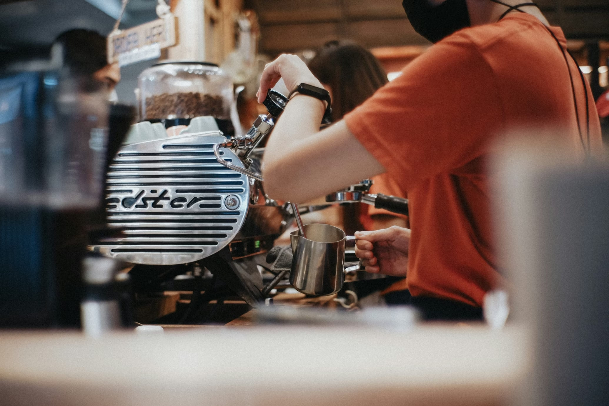
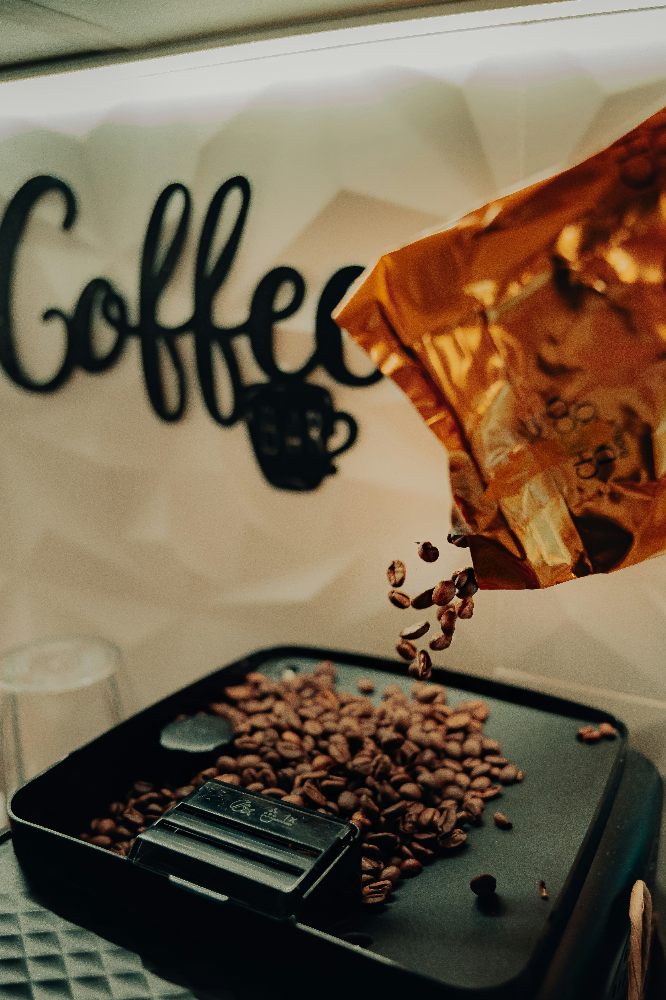
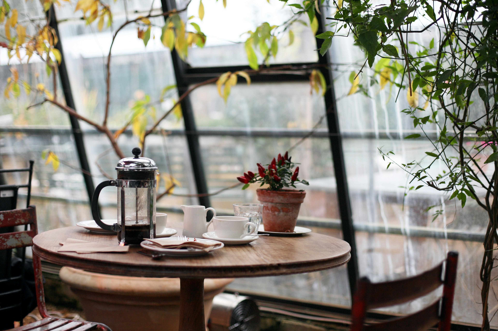
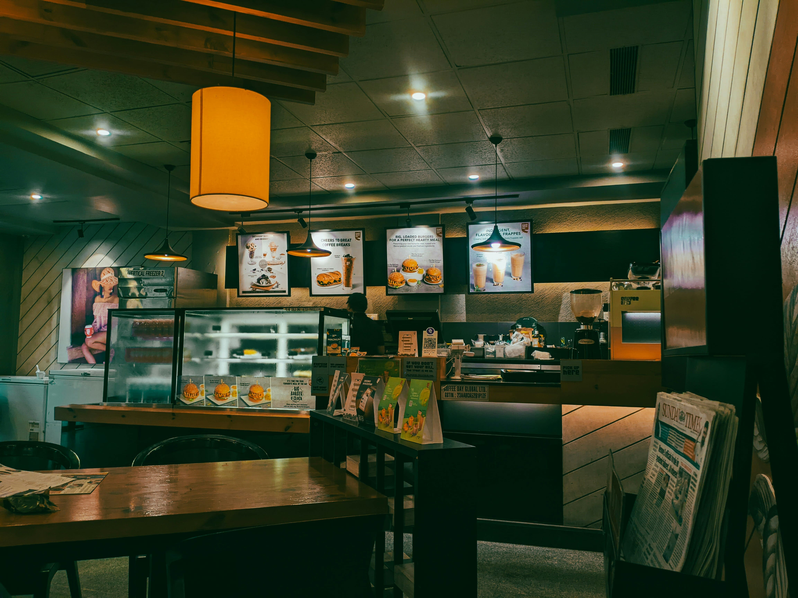

Find the best coffee shops around you
CoffeeLovers helps you discover amazing coffee spots nearby. From cozy local cafés to specialty coffee bars.
CoffeeLovers helps you discover amazing coffee spots nearby. From cozy local cafés to specialty coffee bars.

Explore local coffee shops you may have never noticed. Find cozy places, specialty brews, and unique atmospheres.
Read honest reviews from people who truly love coffee. Know where to find the best espresso, cappuccino, or cold brew.
Use your location to discover the best cafés within minutes. Perfect for work, meetings, or relaxing afternoons.
Launch CoffeeLovers and allow location access to find cafés near you.
Explore nearby cafés, view ratings, photos, and menus.
Pick your favorite spot, grab a coffee, and enjoy the moment.



— Sarah J.
— Daniel M.
Join thousands of coffee lovers discovering new cafés every day.